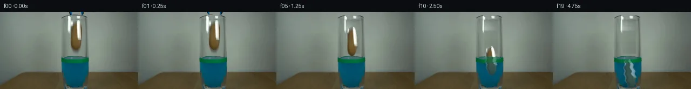

![首帧]()

Round 00
2026-11-05T06:55:33.316451+00:00像素候选变化代码 +273/−0inspection 更新
pixels f9c302bcd5b6fbcc · code 414303b47a93aa75
查看本轮 generate.py 真实 diff
--- previous/generate.py
+++ current/generate.py
@@ -0,0 +1,273 @@
+from pathlib import Path
+import numpy as np
+from PIL import Image, ImageDraw, ImageFilter, ImageFont
+
+from artifact_io import save
+
+
+ROOT = Path(__file__).resolve().parent
+SOURCE = np.asarray(Image.open(ROOT / "first_frame.png").convert("RGB"), dtype=np.uint8)
+assert SOURCE.shape == (144, 256, 3)
+
+
+def soft_polygon(size, points, blur=0.65, scale=4):
+ """Antialiased polygon mask at the requested native size."""
+ hi = Image.new("L", (size[0] * scale, size[1] * scale), 0)
+ d = ImageDraw.Draw(hi)
+ d.polygon([(int(x * scale), int(y * scale)) for x, y in points], fill=255)
+ if blur:
+ hi = hi.filter(ImageFilter.GaussianBlur(blur * scale))
+ return hi.resize(size, Image.Resampling.LANCZOS)
+
+
+def paste_rgba_rgb(dst, src_rgb, mask, xy):
+ """Alpha-composite an RGB sprite onto an RGB numpy frame."""
+ layer = Image.fromarray(src_rgb).convert("RGBA")
+ layer.putalpha(mask)
+ canvas = Image.fromarray(dst).convert("RGBA")
+ canvas.alpha_composite(layer, dest=xy)
+ return np.asarray(canvas.convert("RGB"), dtype=np.uint8)
+
+
+def build_clean_plate():
+ """Reconstruct the narrow area hidden by the held potato and top tool."""
+ out = SOURCE.astype(np.float32).copy()
+
+ # Glass interior formerly hidden by the potato/shadow. Each scanline is
+ # interpolated from immediately adjacent, uncontaminated glass pixels.
+ x0, x1 = 127, 155
+ y0, y1 = 13, 79
+ for y in range(y0, y1):
+ left = SOURCE[y, 125].astype(np.float32)
+ right = SOURCE[y, 157].astype(np.float32)
+ for x in range(x0, x1 + 1):
+ u = (x - x0) / (x1 - x0)
+ col = left * (1.0 - u) + right * u
+ # Very mild cylindrical dimming, strongest in the center.
+ col -= 3.0 * (1.0 - abs(x - 141) / 14.0)
+ edge = min(1.0, (x - x0) / 2.0, (x1 - x) / 2.0,
+ (y - y0) / 2.5, (y1 - y) / 3.0)
+ edge = max(0.0, edge)
+ out[y, x] = SOURCE[y, x] * (1.0 - edge) + col * edge
+
+ # Fill the grabber pixels above the rim from nearby wall tones. The glass
+ # lip itself (y >= 7) remains the photographed lip.
+ for y in range(0, 7):
+ left = SOURCE[y, 123].astype(np.float32)
+ right = SOURCE[y, 161].astype(np.float32)
+ for x in range(125, 160):
+ u = (x - 125) / 34.0
+ col = left * (1.0 - u) + right * u
+ edge = min(1.0, (x - 125) / 2.0, (159 - x) / 2.0)
+ out[y, x] = SOURCE[y, x] * (1.0 - edge) + col * edge
+
+ return np.clip(out, 0, 255).astype(np.uint8)
+
+
+CLEAN = build_clean_plate()
+
+# Original photographed potato sprite. The hand-traced silhouette excludes
+# surrounding wall/glass while retaining the source texture and highlights.
+POT_BOX = (126, 13, 157, 75)
+POT_RGB = SOURCE[POT_BOX[1]:POT_BOX[3], POT_BOX[0]:POT_BOX[2]].copy()
+POT_MASK = soft_polygon(
+ (POT_RGB.shape[1], POT_RGB.shape[0]),
+ [(11, 3), (18, 3), (21, 8), (23, 18), (24, 31), (23, 42),
+ (20, 51), (17, 56), (13, 58), (9, 56), (6, 52), (4, 44),
+ (3, 33), (4, 22), (6, 12), (8, 6)],
+ blur=0.55,
+)
+
+
+def tool_piece(box, points):
+ rgb = SOURCE[box[1]:box[3], box[0]:box[2]].copy()
+ rel = [(x - box[0], y - box[1]) for x, y in points]
+ return rgb, soft_polygon((rgb.shape[1], rgb.shape[0]), rel, blur=0.35)
+
+
… diff truncated; 186 more lines …